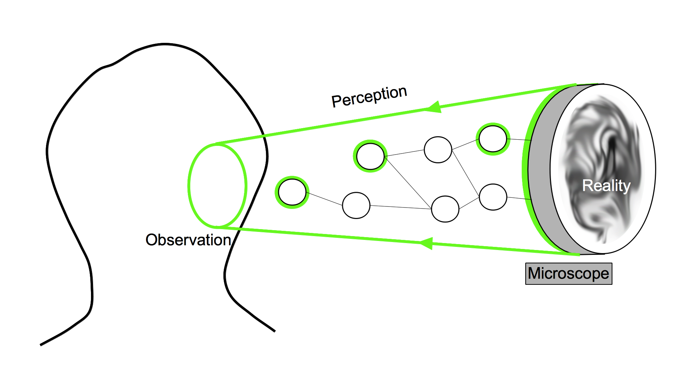
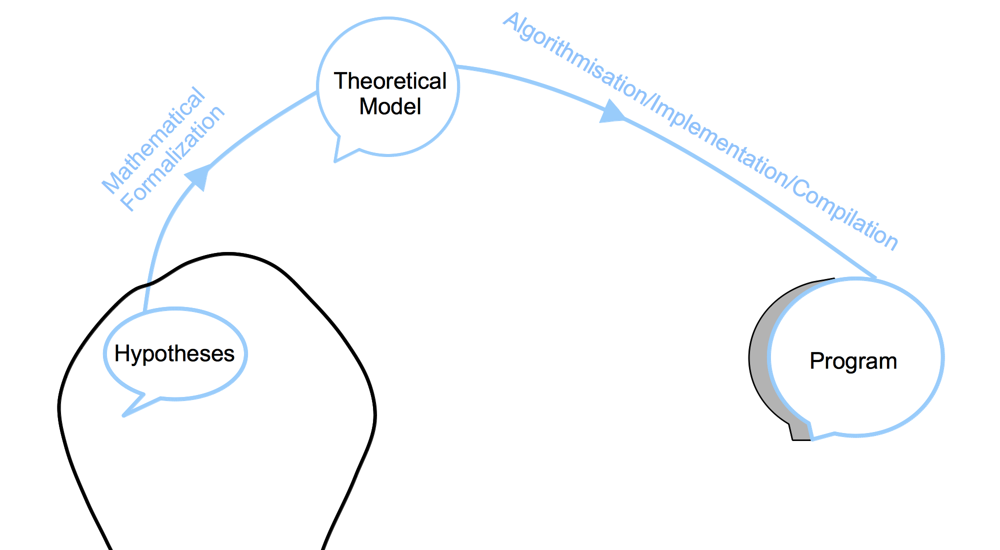
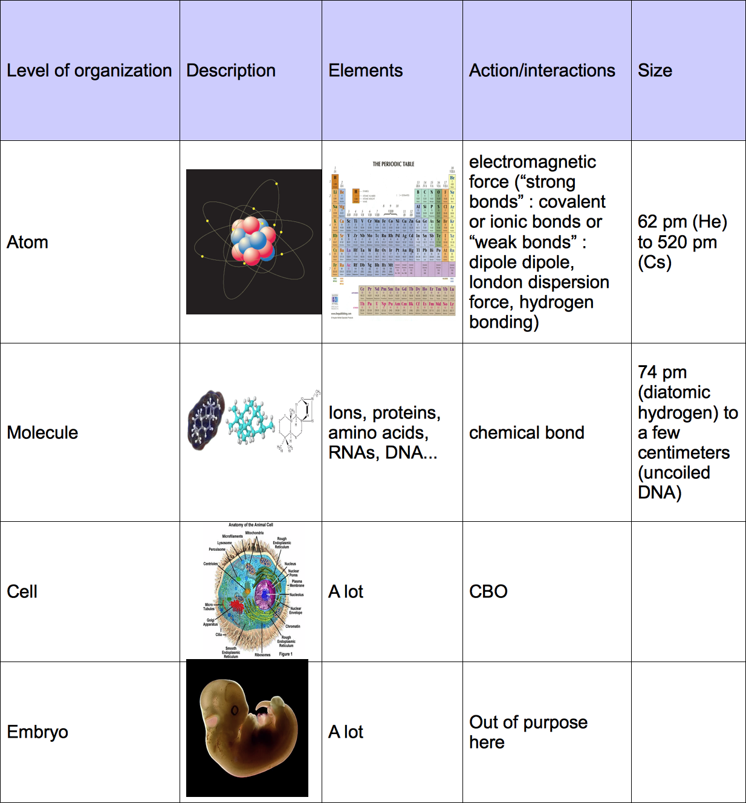

2. Developmental embryo modeling State of the Art and Principles
2.1. Historical timeline biological development
Science of how the organisms form
The definition of development has its own embryology: it changed with the numerous discoveries which punctuated the history of this field of research.
A general definition would state that development is a dynamical process which leads a given organism to a given morphological state.
It is interesting to note that this process never ends, the morphological state of an orgamism changes until senescence,
question of how
This process is not steady, organisms may altern period of dramatic changes with quiet period or growth period.
rough and artificial discontinuity in the process of development
phase 1 formation of the body plan
phase 2 growth of the parts
which can even cycle again as in butterfly...
or how the modern concepts settle down through history
+
/introducing development from evolution, inheritance, transmitted information, transformation of this information->development
2 questions :
.The question of the inputs: from what the shape is formed ?
.The question of how the shape evolve
inputs:
Aristotle considered the menstrual blood as the material out of which the embryo is made and the male semen is what triggered the generation.
The output depends on the stage of observation of the form: it changed as the tools to observe improved through history. Highly dependent of these orthogonal discoveries.
Hard to dissociate the developmental question from the question of evolution of species
Petit resumé d'intro
....
a faire a la fin
call pre developmental era until epigenesis win...
the development concept gains full interest when the epigenesis theory overcomes the preformation theory. Ever improving tools allow the observation of how the initial "fluid" (zygote) transforms itself.
the more dramatical change of shape and forms at the early stages of developement. for a long time unreachable
the more comtemporary question: molecular interaction in the cell: cytoskeleton dynamics, epigenetics regulation
classical study focused on sexual species, discoveries of new asexual species (as polyp,...) caused deep questioning until recent time discoveries allow an integrated understanding of all kind of species (centered around cell behavior)
....
the preformationists' parenthesis
preformation The organisms develop from miniature versions of themselves. Simple growth of the part without differentiation.
Denomination:
from Hopwood
pre 1880: classical descriptive biology
1880-1930: classical experimental biology
1960: developmental biology
passage de descriptif a experimental très important.
description -> too speculative ??
experimental -> more serious ??
from hopwood:
"By the 1880s, academic embryology was in turmoil. The inability of teachers
to agree, especially on the relative weighting of embryological and comparative
anatomical evidence, turned influential students away from evolutionary
morphology. They abandoned problems such as the origin of the vertebrates
to focus on narrower questions, which they expected to answer using a more
limited selection of materials, and many modeled their science on experimental
physiology. Indeed, by opposing “experimental” to “descriptive” embryology,
the more militant secured an identity as experimental biologists in a
science they saw as overly descriptive and rife with unsupported speculation.
In the 1970s and 1980s, historians of biology reinvestigated the changes in
embryology between 1880 andWorldWar I as exemplifying that wider transformation
in the organization, problems, institutions, and methods of the life
sciences by which biology as we know it was made. Experimental embryology
and genetics were taken as model subdisciplines. Initial efforts to generalize
tended to reinforce a one-dimensional view of a “revolt from morphology,”
but later studies worked to produce a more nuanced and inclusive history.31
Yet the very agenda of searching for the origins of the new biology has underestimated
continuities and excluded significant innovations in human and
comparative embryological research."
->pas bien compris
descriptive bio unique tool to test evo hypotheses: for example comparing different species to investigate the relations of phylogeny and ontogeny. ??
experiment for development only questions??
"Experiment, we can conclude, worked in two ways: as a practice and as a
rhetoric, even an ideology.41 As a practice, experiment became the method
of highest status. As a rhetoric, experimentalism associated its practitioners
with modern rigor and control and simultaneously created “descriptive
embryology” as its unglamorous other, ideally relegated to a “classical” past.
Experiment did not in fact replace analysis but was added to it. Experimentalists
sought to reveal the potentialities of parts and analyzed operated embryos
for the presence or absence of tissues, cells, or molecules; they also invested
time in making standards, “normal stages” adapted from Keibel’s plates and
“fate maps,” against which to assess the effects of their interventions. Nor
did “descriptive embryology” just fade slowly into the background; in the
years before World War I, when most histories have experimenters making
all the running, “descriptive” embryologists founded both the first specifically
embryological society and the first research institution dedicated to the
science. And though the war seriously disrupted the European initiatives,
comparative work continued."
date
a
They know the law but not the mean: the race of inheritance structure ending with the discovery of DNA
dna
modern synthesis
Different era
ancient era
preformism vs development
middle age ?
pre-genome era
Germ layers: Remak 1855
morphological distinction ? or presumptive fate map ???
before considering the cell, hypotheses of development mechanisms
early 20th : "The leading cytologists of that time (primarily E.B. Wilson at Columbia University in New York City) recognized that development of the embryo is a manifestation of changes in individual cells and that an understanding of the fundamental principles of development would come from studying cellular structure and function."
stage of linking organism characteristic to cell structure and function
before dna ? who ?
stage of linking inherited information to organism characteristic
->
genome era
operon lactose. Jacob and Monod. regulation of geneic activity, on/off, regulatory sequence ??, already plan the existence of network of regulation in devolpmennt.
transcription factors
application: somitogenesis a la Lewis. delay in ...
Important outil exterieur: invitro cell culture to study cell more precisely (but in an artificial environment)
post-genome era : epigenetics
a introduire apres gradients, fields,
diffusive substance
chemotaxis
mechanotaxis : ecm as a guidance cue, orientation of fibronection polymer?, rigidity
cell sorting theory
differential adhesion + complement cortical tension
Notion of cell communication (plus tot sans doute)
notion de fate map
notion d equilibre entre maternal factor, maternal and zygotic expression
Section
Observation / visualization / manip
Side discoveries: microscopes, gfp
Science
Observation Experimentation Theory
Important papers summary by category:
Autonomous vs Conditional specification (yields concept of induction, determination, competence, potentialities, regulation, diffusion, morphogenetic fields, gradients...): maybe the most fundamental concept of development, developmental concept in its own right (not borrowed to another discipline). at the tissue level and at the cellular level. develop in 2.X.X
original opposition: similar experiment of Roux 1880 (mosaic development) vs Driesch 1891 (self-differentiation as opposed to the dependent differentiation, from rewiew: Hopwood, N., 2008. Embryology. The Cambridge History of Science. Volume 6.
revisited opposition : Ross Harrison 1918 vs Hans Spemann 1924 (maybe not a existing debate but I see similitude with the previous one because the nature of the experiment is the same)
notion of induction at the subcellular level: gene that are activated by TF and locked by inhibitors or epigenetic methylation...
In Xenopus, the Spemann organizer appears at the blastula stage. Spemann graft highlights its ability to release inducers to the adjacent tissue/cells. Those inducing substances trigger the differentiating process occuring in the adjacent tissue/cells.
Focus on the inductive substance:
A global race for identifying the inductive substance started.
experiments:
dead or desintegrated organizer tissue still induces neural plates (Johannes Holtfreter, 1932) see Gerhart, J., 1998. Johannes Holtfreter: January 9, 1901-November 13, 1992,)
1961 Lauri Saxon showned that the inducing substance could act through "millipore" filter with an average pore size of 0.8 micron and a thickness of 20 microns, suggesting that the substance was indeed diffusive.
...
candidate substances (from Steinbeisser, H., 1996. The impact of Spemann's concepts on molecular embryology ):
lipids in Needham, J.G., Waddington, C.H. & Needham, D.M., 1934. Physico-chemical Experiments on the Amphibian Organizer
oleic and nucleic acids Wehmeier, E., 1934. Versuche zur Analyse der Induktionsmittel bei der Medullarplatteninduktion von Urodelen
proteins: Barth, L.G. & Graff, S., 1938. The chemical nature of the amphibian organizer. Cold Spring Harbor Symposia on Quantitative Biology
activin, mesoderm inducing protein form chicken : Tiedemann, H. et al., 1992. The vegetalizing factor. A member of the evolutionarily highly conserved activin family. FEBS letters
follistatin (because the induction is not tissue-specific, a substance contains in several tissues was targeted): ...
Mechanotransduction: mechanical action on the cell as a regulatory input (either through genetic regulation or cytoplasmic regulation)
a review : Eyckmans, J. et al., 2011. A Hitchhiker's Guide to Mechanobiology. Developmental cell see
First theory involving mechanical forces:
Wolff, J. Das Gesetz der Transformation der Knochen. (Hirschwald: 1892): the mechanical environment impacts the structure of bone tissue after healing of fractures.
Roux, W. Gesammelte Abhandlungen über Entwicklungsmechanik der Organismen. (1895) and Thompson, D. A. W. On Growth and Form. (Cambridge University Press: 1917): mechanical forces shape tissues and organs during embryonic development
More recently externally applied forces have impact on cellular proliferation (in bone , vascular system), cell signaling (endothelial and smooth muscle ).
me: looking like first in vitro experiments started in early 1980s: force pressure exerted on cells modify cell function. Particularly, study on blood-flow-dependent shear stress on cells in angiogenesis, vascular remodeling, atherosclerosis.
see in Davies, P.F. et al., 1984. Influence of hemodynamic forces on vascular endothelial function. In vitro studies of shear stress and pinocytosis in bovine aortic cells. The Journal of clinical investigation, 73(4), pp.1121–1129.
me: does not seem to emphasize the mechanotransduction but rather the specific discovery. Need to find a more "important" paper...
me: another one Franke, R.P. et al., 1984. Induction of human vascular endothelial stress fibres by fluid shear stress. Nature, 307(5952), pp.648–649. see
molecular transduction units: "many anatomical sites could be involved in transducing such forces into biochemical signals (Eyckmans)"
site 1: force-induced nuclear deformations can directly alter genomic structure and accessibility of transcription factors to specific genetic targets, but no direct demonstration of such a mechanism has yet been described (Eyk)
me: mechanotransdution catogory 1: as a source of cytoplasmic reaction (not involving genetic regulation but may need a certain state given by genetic regulation)
site 2: adherent junctions
Nelson, C.M. et al., 2005. Emergent patterns of growth controlled by multicellular form and mechanics. Proceedings of the National Academy of Sciences of the United States of America study of the impact of tension and adhesion on the spatial pattern of proliferation in in vitro multicellular system (experiment + modeling). Endothelial cells. Results the higher the mechanical stress, the more the cells proliferate. Chemically inhibiting cytoskeletal tension-responsible molecules (rho kinase, myosin II ATPase with blebbistatin) induces a reduction of proliferation rate.
More recently, in 3D epithelial tissues (branching pattern) in Gjorevski, N. and Nelson, C.M., 2010. Endogenous patterns of mechanical stress are required for branching morphogenesis. Integrative Biology: "branching only occurred at locations where the biochemical and mechanical cues were predicted to reinforce each other" and "We found also that the magnitude of mechanical stress at branching sites correlated with the extent of branching: decreasing the magnitude of stress by decreasing cellular contractility or matrix stiffness resulted in decreased branching, whereas increasing the magnitude of stress resulted in increased branching."
both previous papers evoke "mechanical gradients"
in vivo context, drosophila mesoderm invagination in Martin, A.C. et al., 2010. Integration of contractile forces during tissue invagination. The Journal of cell biology: feedback between actomyosin meshwork pulsing contraction and intracellular adhesion through adherent junctions. No influence on the GRN regulation (twist and snail are required but nothing shows that they are up-regulated by mechanotransduced signals)
Drosophila again, Fernandez-Gonzalez, R. et al., 2009. Myosin II dynamics are regulated by tension in intercalating cells. Developmental cell: "myosin II is stabilized at the cortex in regions of increased tension. Myosin II is recruited in response to an ectopic force and relieving tension leads to a rapid loss of myosin, indicating that tension is necessary and sufficient for cortical myosin localization."
site 3: hemidesmosme
in Zhang, H. et al., 2011. A tension-induced mechanotransduction pathway promotes epithelial morphogenesis. Nature (C Elegans): "By compressing muscle-defective mutant embryos between a blunted microneedle tip and a programmable microscope stage, the authors were able to rescue GIT1 signaling and CeHD maturation, thus providing a link between muscle-generated tension and longitudinal growth in C. elegans." (Eyk)
me: the real deal, mechanotransduction category 2: developmental genes activation induced by external force:
in Desprat, N. et al., 2008. Tissue deformation modulates twist expression to determine anterior midgut differentiation in Drosophila embryos. Developmental cell, show how compression forces between two cell types during Drosophila germ band elongation can induce the expression of Twist, a transcription factor that regulates the differentiation of the anterior midgut. (Eyk) magnetic microtweezers were used to push the magnetized patch against the stomodeal cells with a force of 60 ± 20 nN. These mechanical manipulations rescued Armadillo/beta catenin translocation from the cell junctions to the nucleus which restored transcription of Twist (Eyk)
me: the real deal 2, mechanotransduction category 3: internal polarizaton of the cell induced by external force:
in Weber, G.F., Bjerke, M.A. & Desimone, D.W., 2011. A Mechanoresponsive Cadherin-Keratin Complex Directs Polarized Protrusive Behavior and Collective Cell Migration. Developmental cell (Xenopus): local pulling on C-cadherins induces polarization of the internal structure of the cell (keratin intermediate filament toward stressed sites, plakoglobin at the cadherin adhesion sites. Cell protrudes and migrates/intercalates at the other end of the cell. It explains how in multicellular protruding ensemble, intercalation axes align, and (maybe) how a migration signal can be propagated (if these cells are in a certain state) ). Still need to elucidate how to drive this powerful property.
other paper:
Dupont, S. et al., 2011. Role of YAP/TAZ in mechanotransduction. Nature, 474(7350), pp.179–183.
other reviews Orr, A.W. et al., 2006. Mechanisms of mechanotransduction. Developmental cell, Jaalouk, D.E. & Lammerding, J., 2009. Mechanotransduction gone awry. Nature reviews Molecular cell biology, Wozniak, M.A. & Chen, C.S., 2009. Mechanotransduction in development: a growing role for contractility. Nature reviews Molecular cell biology
2.2. Theoretical biology models of development
Even if some of the authors cited in the previous section were involved in theoretical research (for example Waddington, Needham and others founded the "Theoretical Biology Club" in 1930), most of the production was provided by "classical" biologists. In the following sections, we will present a state of the art of the theoretical studies in developmental biology.
En vrac
Jacobson, A.G. & Gordon, R., 1976. Changes in the shape of the developing vertebrate nervous system analyzed experimentally, mathematically and by computer simulation. Journal of Experimental Zoology, 197(2), pp.191–246. : mathematical model of "the formation of the neural plate based on different autonomous, preprogrammed schedules of shape changes for different regions of the neural ectoderm."
Review
Oates, A.C. et al., 2009. Quantitative approaches in developmental biology. Nature Reviews Genetics,
Lewis, J., 2008. From signals to patterns: space, time, and mathematics in developmental biology. Science, 322(5900), pp.399–403.
Tomlin, C.J. & Axelrod, J.D., 2007. Biology by numbers: mathematical modelling in developmental biology. Nature Reviews Genetics, 8(5), pp.331–340.
Reeves, G.T. et al., 2006. Quantitative Models of Developmental Pattern Formation. Developmental cell, 11(3), pp.289–300.
Morelli, L.G. et al., 2012. Computational approaches to developmental patterning. Science, 336(6078), pp.187–191.
Waddington's epigenetic landscape
Reaction-diffusion
Turing, A.M., 1952. The chemical basis of morphogenesis. Philosophical transactions of the Royal Society of London Series B, Biological sciences, 237(641), pp.37–72.
PCP signalling, Amonlirdviman, K. et al., 2005. Mathematical modeling of planar cell polarity to understand domineering nonautonomy. Science : a reaction-diffusion model to establish that the Drosophila melanogaster epithelium is polarized with the PCP pathway in a non-autonomous manner.
Morphogens gradient formation and function
Shape and dynamics of the morphogen gradient
Precision of the morphogen gradient
Epithelial cell shape and their division pattern.
Gibson MC, Patel AB, Nagpal R, Perrimon N (2006) The emergence of geometric order in proliferating metazoan epithelia. Nature 442: 1038–1041. used a Markov chain model to explain the evolution of the distribution of cell shape in a Drosophila epithelium. The authors propose that cell proliferation, and not cell packing, is responsible for the shaping of cells in monolayered epithelia. The model is compared with various organisms data. (for , an example of a "top-down" model: no parameters are needed.)
Farhadifar R, Ro ̈per JC, Aigouy B, Eaton S, Julicher F (2007) The influence of cell mechanics, cell-cell interactions, and proliferation on epithelia packing. CurrBiol 17: 2095–2104. . defends that physical forces, in addition to cell division, are required to explain epithelial cell shape in the wing disc of Drosophila. A vertex based model is used where each vertex represents the junction. Forces are derived from an energy function which takes into account cell elasticity, cortical tension and inter cell adhesion. The model is tested with laser ablation experimental data.
Patel AB, Gibson WT, Gibson MC, Nagpal R (2009) Modeling and inferring cleavage patterns in proliferating epithelia. PLoS Comp Biol 5: e1000412. . investigates two factors in cell proliferation : the heritage of the cleavage plane orientation between mother and daugthter cells, and symmetry of the division. It concludes that strong symmetry is the dominant factor explaining the distribution of shapes observed experimentally.
Sahlin P, Jonsson H (2010) A modeling study on how cell division affects properties of epithelial tissues under isotropic growth. PLoS ONE 5: e11750. . study the division pattern in the shoot apical meristem epithelium of Arabidopsis. The particularity of this tissue is that an isotropic tension stretches it. The results are similar to the previous ones: symmetric division favors the simalution of observed cell shape distribution. This model used vertex based cell junction and growth rate and division of the cell is control by its local mechanical stretching.
Sandersius, S. et al., 2011. Correlating Cell Behavior with Tissue Topology in Embryonic Epithelia. PLoS ONE, 6(4), p.e18081. . Study epithelium pattern before and during the primitive streak formation in chick embyro. 1. They deny the relevancy of non-spatial markov model to explain the histogram of neighbor number in proliferating only epithelium (as Gibson 2006 does). Argument that any attempt to improve biological plausibility of this model (3 sided cells, asynchronous division) induces a deviation from the "universal" histogram. "We conclude from these results that attempts to improve the non-spatial model by adding biological realism are futile, and that the excellent agreement of the GPNP model with experimental data appears to be serendipitous"(!!!). 2. They show that their geometrical epithelium model (with ScEM) predict the histogram with the only sensible parameter being growth rate. 3. However, a surprising result is that they observe that their non-spatial markov model fits histogram from proliferation epithelium with cell motility (broader histogram).
Escudero, L.M. et al., 2011. Epithelial organisation revealed by a network of cellular contacts. Nature communications, 2, p.526. . introduces complex network topological measure in addition to the aformentionned article's geometrical measures. The new measures allow to discriminate the epithelia belonging to different species or different stage of development or between genetic variants of the same species. The observed data are classified with statistical methods, allowing to reveal the "signature" of an epithelium. (intersting for the measure tools but no explanatory value.)
Gibson, W.T. et al., 2011. Control of the mitotic cleavage plane by local epithelial topology. Cell, 144(3), pp.427–438. : study the interplay between the cell shape and the cleavage-plane orientation
Potts history
CPM is cell-oriented, as opposed to a continuum or pointillistic model. CBO given : cells stick to each other, move actively up and down gradients in their external environment, secrete and absorb materials, differentiate, grow, divide and die. Continuum models ignore cells and treat tissues as continuous materials with specific mechanical properties, completely ignoring the division of tissues into cells. Pointillistic models treat biological tissues as collections of point-like cells, ignoring many cell characteristics that are important to biological behaviors, such as cell geometry and the adhesive interactions between cells at their membranes.
James A. Glazier, Ariel Balter, Nikodem J. Poplawski. Magnetization to Morphogenesis: A Brief History of the Glazier-Graner-Hogeweg Model.
Historical origins of CPM : Ising model (1920, Wilhelm Lenz, spin of atoms and hamiltonian to explain ferromagnetism/paramagnetism transistion), Potts model (Renfrey B. Potts, 1952, multiple values of the spin), Ashkin and Teller add dynamics with a Monte-Carlo method (1943), Glazier and Graner use the Metropolis algorithm for quasi deterministic kinetics.
Athanasius F.M. Marée, Veronica A. Grieneisen, Paulien Hogeweg. The Cellular Potts Model and Biophysical Properties of Cells, Tissues and Morphogenesis.
Nicholas J. Savill, Roeland M. H. Merks. The Cellular Potts Model in Biomedicine. ™
Ariel Balter, Roeland M. H. Merks, Nikodem J. Poplawski, Maciej Swat, James A. Glazier. The Glazier-Graner-Hogeweg Model: Extensions, Future Directions, and Opportunities for Further Study.
manque papier kos.graner,...
Potts papers
Izaguirre, J. et al., 2004. CompuCell, a multi-model framework for simulation of morphogenesis. Bioinformatics, 20(7), pp.1129–1137.
Cickovski, T., Huang, C., Chaturvedi, R., Glimm, T., Hentschel, H. G. E., Alber, M., Glazier, J. A., Newman, S. A., and Izaguirre, J. A. (2005). A framework for three-dimensional simulation of morphogenesis. IEEE/ACM Trans. Comput. Biol. Bioinform. 2, 273–288. (pas de pdf)
Cickovski, T. et al., 2007. From genes to organisms via the cell: a problem-solving environment for multicellular development. Computing in Science & Engineering, 9(4), pp.50–60.
Swat, M.H.M. et al., 2008. Multicell simulations of development and disease using the CompuCell3D simulation environment. Methods in molecular biology (Clifton, NJ), 500, pp.361–428.
Glazier, J.A. et al., 2008. Coordinated action of N-CAM, N-cadherin, EphA4, and ephrinB2 translates genetic prepatterns into structure during somitogenesis in chick. Current topics in developmental biology, 81, pp.205–247.
Harrison, N.C., Diez Del Corral, R. & Vasiev, B., 2011. Coordination of Cell Differentiation and Migration in Mathematical Models of Caudal Embryonic Axis Extension. PLoS ONE, 6(7), p.e22700.
Zhang, Y. et al., 2011. Computer Simulations of Cell Sorting Due to Differential Adhesion. PLoS ONE, 6(10), p.e24999.
Hester, S.D. et al., 2011. A Multi-cell, Multi-scale Model of Vertebrate Segmentation and Somite Formation. PLoS Computational Biology, 7(10), p.e1002155.
Cell sorting, Differential Adhesion Hypothesis
DAH, steinberg papers:
Steinberg, M.S., 1962c. On the mechanism of tissue reconstruction by dissociated cells. I. Population kinetics, differential adhesiveness. and the absence of directed migration. Proceedings of the National Academy of Sciences of the United States of America, 48, pp.1577–1582.
Steinberg, M.S., 1962a. Mechanism of tissue reconstruction by dissociated cells. II. Time-course of events. Science, 137(3532), pp.762–763.
Steinberg, M.S., 1962b. ON THE MECHANISM OF TISSUE RECONSTRUCTION BY DISSOCIATED CELLS, III. FREE ENERGY RELATIONS AND THE REORGANIZATION OF FUSED, HETERONOMIC TISSUE FRAGMENTS. Proceedings of the National Academy of Sciences of the United States of America, 48(10), pp.1769–1776.
Steinberg, M.S., 1963. Reconstruction of tissues by dissociated cells. Some morphogenetic tissue movements and the sorting out of embryonic cells may have a common explanation. Science, 141(3579), pp.401–408.
Steinberg, M.S., 1970. Does differential adhesion govern self-assembly processes in histogenesis? Equilibrium configurations and the emergence of a hierarchy among populations of embryonic cells. Journal of Experimental Zoology, 173(4), pp.395–433.
Foty, R. & Steinberg, M., 2005. The differential adhesion hypothesis: a direct evaluation. Developmental Biology, 278(1), pp.255–263. : the surface tension of an aggregate is proportional to the cadherin expression level.
other papers:
Graner F, Glazier JA (1992) Simulation of biological cell sorting using a twodimensional extended Potts model. Phys Rev Lett 69: 2013–2016. (on PRL, no pdf yet)
Glazier JA, Graner F (1993) Simulation of the differential adhesion driven rearrangement of biological cells. Phys Rev E 47: 2128–2154.
Beysens DA, Forgacs G, Glazier JA (2000) Cell sorting is analogous to phase ordering in fluids. Proc Nat Ac Sc USA 97: 9467–9471.
Brodland, G.W. & Chen, H.H., 2000. The mechanics of heterotypic cell aggregates: insights from computer simulations. Journal of biomechanical engineering, 122(4), pp.402–407. : confront the surface tension mechanism with their finite element cell model.
Beatrici, C.P. & Brunnet, L.G., 2011. Cell sorting based on motility differences. PHYSICAL REVIEW E, pp.1–5.
Zhang, Y. et al., 2011. Computer Simulations of Cell Sorting Due to Differential Adhesion. PLoS ONE, 6(10), p.e24999.
Beatrici, C.P. & Brunnet, L.G., 2011. Cell sorting based on motility differences. PHYSICAL REVIEW E, 84(3 Pt 1), p.031927.
Maître, J.-L. et al., 2012. Adhesion Functions in Cell Sorting by Mechanically Coupling the Cortices of Adhering Cells. Science.
cite recent papers with interfacial tension, cortical tension to modulate ...
Somitogenesis
Intro: from Oates, A.C., Morelli, L.G. & Ares, S., 2012. Patterning embryos with oscillations: structure, function and dynamics of the vertebrate segmentation clock. Development, 139(4), pp.625–639. : The discovery of the segmentation clock, an oscillating genetic network in the pre-somitic mesoderm (PSM), leading the formation of somites in the elongating body axis of vertebrate embryo is the source of an active field of theoretical modeling. The phenomenon is conserved in various species and it illustrates the interplay of inner cell regulation and cell-cell communication. Cooke and Zeeman introduced a general mechanism called the "clock and wavefront" mechanism which has intensively been studied since its introduction in 1976 . Lacking molecular grounding, it predicts the number and size of the somites from the period of the clock and the velocity of a wave travelling from the anterior to the posterior part of the axis, locking the cellular oscillators and forming a fixed periodic pattern. From then on, multiple oscillating genes, ie genes whose encoding protein and RNA follow cyclic creation and degradation, have been discovered in various species: Delta/Notch, Wnt, FGF, Hes/Her, and multiple models have been proposed to explain their interactions.
Cooke J, Zeeman EC (1976) A clock and wavefront model for control of the number of repeated structures during animal morphogenesis. J Theor Biol 58: 455–476. : positional information through a gradient along the AP axis is coupled with smooth cellular oscillator.
Meinhardt, H., 1986. Models of segmentation. p.320.
Baker RE, Schnell S, Maini PK (2006) A clock and wavefront mechanism for somite formation. Dev Biol 293: 116–126.
Riedel-Kruse, I.H., Müller, C. & Oates, A.C., 2007. Synchrony dynamics during initiation, failure, and rescue of the segmentation clock. Science, 317(5846), pp.1911–1915.
Tiedemann HB, Schneltzer E, Zeiser S, Rubio-Aliaga I, Wurst W, et al. (2007) Cell-based simulation of dynamic expression patterns in the presomitic mesoderm. J Theor Biol 248: 120–129.
Baker RE, Schnell S, Maini PK (2008) Mathematical models for somite formation. Multiscale Modeling of Developmental Systems 81: 183–203.
Goldbeter A, Pourquie O (2008) Modeling the segmentation clock as a network of coupled oscillations in the Notch, Wnt and FGF signaling pathways. J Theor Biol 252: 574–585.
Uriu K, Morishita Y, Iwasa Y (2010) Synchronized oscillation of the segmentation clock gene in vertebrate development. J Math Biol 61: 207–229.
Jensen PB, Pedersen L, Krishna S, Jensen MH (2010) A Wnt Oscillator Model for Somitogenesis. Biophys J 98: 943–950.
Murray, P.J., Maini, P.K. & Baker, R.E., 2011. The clock and wavefront model revisited. Journal of Theoretical Biology, 283(1), pp.227–238. . In addition to the posteriorly moving molecular gradient which slows the rate of the segmantation clock oscillations, the authors propose that ocillator coupling may also induce a slowing of the oscillations. Using a continuum model of oscillators, an emergent wavefront is produced with three parameters: the clock period in the PSM, the somite length, the length of the PSM. Their model predicts the distance between moving shapes of gene expression, the number of moving stripes and the oscillating period profile along the antero-posterior axis. It also states that the ratio of coupling strength explains interspecies variability and that the period profile is conserved along the antero-posterior axis.
Hester, S.D. et al., 2011. A Multi-cell, Multi-scale Model of Vertebrate Segmentation and Somite Formation. PLoS Computational Biology, 7(10), p.e1002155. . Builds an integrative model of the clock and wavefront mechanism. Using a wide variety of accepted "submodels" as intracellular segmentation clock, coupling through the Notch-Delta signalling pathway, FGF8 determination front, delayed differentiation or a biomechanical model of cell sorting (potts with differential cell-cell adhesion), they reveal some inconsistencies between these sub-models.
Limb
Newman, S.A. et al., 2008. Multiscale models for vertebrate limb development. Current topics in developmental biology, 81, pp.311–340.
Benazet, J.-D. & Zeller, R., 2009. Vertebrate Limb Development: Moving from Classical Morphogen Gradients to an Integrated 4-Dimensional Patterning System. Cold Spring Harbor Perspectives in Biology, 1(4), pp.a001339–a001339.
Plants (Phyllotaxis, mechanosensing)
Review: Boudaoud, A., 2010. An introduction to the mechanics of morphogenesis for plant biologists. Trends in Plant Science, 15(6), pp.353–360.
Review: Uyttewaal, M., Traas, J. & Hamant, O., 2010. Integrating physical stress, growth, and development. Current opinion in plant biology, 13(1), pp.46–52.
Rudge, T. & Haseloff, J., 2005. A computational model of cellular morphogenesis in plants. Advances in Artificial Life, pp.78–87.
Jönsson, H. et al., 2006. An auxin-driven polarized transport model for phyllotaxis. Proceedings of the National Academy of Sciences of the United States of America, 103(5), pp.1633–1638. how is determined the presumptive tissue for leaf primordia in the apical meristem of Arabidopsis thaliana. These regions express a high concentration of auxin which is transfered from the neighboring cells. The auxin transporter, PIN1, is polarized along the auxin gradient. The authors combine ODE modeling of theses interactions with cell growth and eventually compare the simulation with live imaging.
Chickarmane V, Roeder AH, Tarr PT, Cunha A, Tobin C, et al. (2010) Computational morphodynamics: a modeling framework to understand plant growth. Annu Rev Plant Biol 61: 65–87
Dupuy, L. et al., 2007. A System for Modelling Cell-Cell Interactions during Plant Morphogenesis. Annals of Botany, 101(8), pp.1255–1265.
Dupuy, L., Mackenzie, J. & Haseloff, J., 2010. Coordination of plant cell division and expansion in a simple morphogenetic system. Proceedings of the National Academy of Sciences of the United States of America, 107(6), pp.2711–2716.
Hamant, O. et al., 2008. Developmental patterning by mechanical signals in Arabidopsis. Science, 322(5908), pp.1650–1655.
(moi, ajouter les autres, van marée, les francais... traas, traqui)
Biomechanical properties of living organisms
Mechanosensing in single cells
Mechanosensing in tissues and organisms
Mechanical control of tissue morphogenesis
Mechanical control of epithelial morphogenesis
Hamant, O. et al., 2008. Developmental patterning by mechanical signals in Arabidopsis. Science, 322(5908), pp.1650–1655.
2.3. Modeling Principles
2.3.1. Modeling in experimental science
Goal of this section : describe how theoretical and more precisely, simulated theoretical hypotheses is integrated in the process of experimental science.
Experimental Science augmented with Computer Simulation. Simulated seashell extracted from Fowler, D.R., Meinhardt, H. & Prusinkiewicz, P., 1992. Modeling seashells. Proceedings of SIGGRAPH '92. Fowlery:1992wb
2 actors : individual and reality / environment
3 process: perception, generation of hypothesis (modeling), experimentation
Experimental science involves an individual and its environment ("Reality"). This activity shares similarities with other of its explanation-seeking activities.
Experimental science is characterized by three fundamental processes: the perception of its environment, the generation of new hypotheses and the experimentation on the environment (see figure ).
1. The loop can be entered by the individual perceiving his environment.
2. The observations are then matched with the knowledge of the individual. Most of the time, if the observation conforms to the knowledge, no reactive signal is emitted. However, a significant difference would trigger a signal of curiosity which will challenge the existing set of hypotheses of the individual and lead him to reconsider some of them.
3. The process of how the individual create new hypotheses will not be discussed in this manuscript (analogy, inference, induction, abduction, deduction...). What will be discussed is the conceptual nature of these hypotheses (see below).
4. The "experimental" qualification of sciences like biology or physics is due to their ability to couple the "pure thinking" exercise of generating new hypotheses with interaction on the "real" system in order to test the validity of these new hypotheses.
The environment of the individual is made of multiple potential object of study.
The specification of the object of study induces a separation of the object from its own environment which may, or may not, include the individual. In developmental biology, the studied object is the embryo and the individual is excluded from the embryo's environment.
Exchange/Validation by the scientific community
Even if the individual is at the center of experimental science, experimental science is a collective effort. The interaction with the scientific community operates bidirectionally.
All the hypotheses the individual makes are build upon an accumulation of prior scientific works. He can access nearly all knowledge produced by the scientific community thanks to conferences or the various scientific papers databases (Pubmed, arXiv.org, IEEE, ACM, Google Scholar...).
One particularity of science is that validation is made by the approval of the community of scientists. Through the peer-reviewed publication system, each new work is filtered before availability by a panel of individual representing the community. We may distinguish two kind of validation: the validation of the scientific work containing all or some parts of the elements mentionned in figure , and the validation of the hypotheses contained in the scientific work itself. We will develop the latter in the following (XXXXXX see part III).
Experimental science is a collective effort. Each member of the scientific community may send or receive scientific work.
Methodology augmented by tools
Experimental science insists on the confrontation of the hypotheses, their consequences and the observation.
This confrontation is improved by the means of tools.
Tools can be considered as the third actor in experimental science, in addition to the individual and the object of study.
recursive process
They are also object of study by themselves. In developmental biology, the tools used to observe or perturb are themselves the focus of intensive ongoing research, from other fields of science.
The advances of our understanding are controlled by the advances of theses tools. Always improving microscopy increase the spatio-temporal resolution of the observations and every new microscope triggers a boom of conceptualization of these observations.
The use of new physical tools drives methodological renewals. We will present an augmented version of the figure which introduces the methodology developed for this project. We distinguish the tools designed to augment the three fundamental processes of experimental science by the inverse order of usage in this project: tools to manipulate, tools to perceive and tools to conceive.
Tools to manipulate
These tools are designed to modify the "natural" behavior of the object of study, or its environment, in a controlled manner.
These experiments are artificial construction allowing to discriminate the hypotheses ruling the behavior of the object of study.
In developmental biology, the embryo can be perturb either genetically or mechanically.
Genetic experiments comprise embryo expressing abnormal phenotype either by random mutagenesis or by morpholino injection (knocking down of specific gene).
Mechanical experiments can be either lesion applied to some specific tissue to study their evolution (see laser ablation between individual cell-cell boundaries , or tissue dissection by laser XXXXXXXXX find ref) or mechanical constraint to measure the response of the tissue.
Mechanotranduction mechanism allow to conceive experiments at the border between genetics and mechanics (see genetic regulation by exerting a force with magnetic tweezer and magnetic nanoparticles ).
Tools to perceive
Tools can improve the perception of the object of study, from the interfacing between the real system and the observed data, to the reconstruction of these data which extracts salient features in the observation.
Perception-oriented tools are object whose aim is to produce measures of the object of study. Measures are quantification of the physical quantity of the object of study with ordinary real numbers. It may noted that if these tools add a significant objectivity in the measurement process, allowing interpretation free comparison between measures, the physical quantity per se are determined by the current knowledge and thereby are not are subject to interpretation.
An improvement of the perception-oriented tools is the widening of the nature and scales of the physical quantity measured, accessing dimensions out of reach of the individual senses.
In developmental biology, optical devices allowed to reach the sub-cellular scale, sending photons to camera sensors with high spatial resolution.
Sometimes, perception-oriented tools must be coupled with experimentation to allow measurement. For example, the zebrafish, which has been selected in part for its transparent characteristic at early stages, is modified by injecting fluorescent-protein coding RNA to highlight some structure of the cells such as membranes, or nuclei when exposed to laser stimulation.
The widening of scales induces the increasing of the size of generated data. This tendency is amplified by the coupling of measurement tools with automated recording with computers. When an embryo is measured under microscope device, the size of the data recorded is enormous. For a few hours of development, this measure, which is the spatio-temporally discriminated quantity of light emitted by a laser-excited fluorescent zebrafish, is composed of billions of values (for example, 200 3D-volume of voxels of light quantity obtained each 3 minutes, each volume having a resolution of 512x512x200, gives 10.48576 billions of values). This data size may also be multiply by the number of channel used for excitation (for example if both the cell nuclei and the cell membranes are captured). We call this microscope output data the 4D (3D + time) raw data set (or raw data for simplicity's sake).
reconstruction needed
This kind of extremely large data is not directly accessible by the individual. He can not gain biological insight from these raw data. Processing of the data is needed to allow interpretation and comparison with hypotheses. We call this processing reconstruction of the data. The reconstruction is a series of subprocesses organized as a workflow. Each subprocess does a specific task which extract some information from the input data sets and generate a new data set. Computers propose visualization software tools which allows the individual to create 2D movies of the captured developmental sequence. However, if a movie permits qualitative insights, it looses the quantitative measurement which would be used for comparison. A reconstruction which is useful for developmental biology question is extraction from the raw data of the lineage tree of captured cells. For a given cell at a given time step, this data set stores the identification number of the same cell at the previous time step. With the lineage tree, cells can be followed through time and, as cell divides during the embryo's development, and form diverging branches of the "tree". In addition, complementary information can be stored for each cell at each time step: the 3D coordinates, the lists of neighbors, the quantity of captured protein signal, or ligand, or any fluorescent labeled molecules... The final data sets of the workflow compose the reconstructed embryo. It stores all the biologically relevant information contained in the raw data set at the cellular scale.
Some parts of the aforementioned reconstruction workflow can be realized with commercial softwares. However, the high number of cells involved and the difficulty to interpret and manipulate the 3D volume of data initiated the design of adapted softwares and the automation of most of these subprocesses. These tasks are the past and current results of the European project Bioemergences which developed a generic workflow of reconstruction of the lineage tree in vertebrate embryos. New specific modules has been developed for this project. The detailed presentation of the reconstruction workflow is done in chapter XXXXXXX.

Augmentation of the perception by a reconstruction workflow.
validation of the reconstruction ?? (superflu ici ?)
outils pour concevoir
rapprocher concevoir de percevoir
Tools to conceive
part a: general definition
Models or hypotheses aim at describing the whole picture of the studied phenomenon. They withdraw some supposed details and generalize the underlying mechanisms. They establish relations between the observed data.
means of expression constraints the models
Models are constraint by their means of expression. The description of the structures and their interactions varies whether their are expressed through the verbal language, the graphical language or the mathematical language. There exists links between all these means of expression and models are often described through a combination of some of them.
are we creating a new language for expressing ideas with computer simulation, interactive graphical language ?
classical/theoretical dichotomy
In the context of developmental biology, a distinction is often expressed between "classical" studies and theoretical studies.
The former studies often expose "qualitative" models: models highlighting the nature of interaction between elements with no quantitative parameters.
The latter studies use the mathematical formalism to express the hypotheses. The elements are represented by variable and their interaction is formulated through equations fine-tuned by parameters.
The gain of theoretical studies is an increase of predicability of the hypotheses.
The consequence can be tested extensively, allowing to automatically reverse engineer the studied phenomenon.
This comes at the cost of a "simplification and an idealization, and consequently a falsification" (Turing ) of the description of the elements, which may perplexed "classical" biologists who are used to deal with the complexity of living systems.
Either theoretical or "classical", the role played by model remains invariant. However, theoretical models bring some advantages:
their formalized nature enables the design of precise experimental measures.
their predictability allow to test new hypothesis by examining the consequences of unobserved phenomenon.
they allow to integrate a wide range of observation. Without the help of formalization, the consequence of multiple interaction quickly become unpredictable by "pure though" experiment only.
specific vs general question answering
To deepen the previous advantage, we may provide cognitive scientist Marvin Minsky's definition of model in his 1965's text "Matter, mind and models" :
"To an observer B, an object A* is a model of an object A to the extent that B can use A* to answer questions that interest him about A".
This definition is centered around the notion of the question asked by the observer (or the individual in this text). It implies that any attempt of model type categorization should start by categorizing question type. Indeed, a distinction can be made between specific and general questions. In fundamental physics, the distinction is not so clear, as each specific question as generally massive repercussion on everything else. However, in biology, the gap is larger. As an example, we may cite the specific model which studies the shape of cells in a epithelium by Gibson et al. , as opposed to generic models aiming at simulating various developmental phenomena like Compucell or Cellerator . The former class asks a question then designs a model to answer it whereas the latter builds an integrative model before answering various potential questions. The latter class of models is proper to the theoretical category and, as we may show in the following, it is even part of a subcategory of theoretical models.
dire que l'on presentera la plateforme de simulation dans les chapitres 3 4 5 avant une revue des connaissances actuelles du early zebrafish development et les questions que nous étudieront dans le chapitre Case Studies
Theoretical models, analytical vs computer-simulated model
As mentioned above, theoretical models formalize interactions with equation linking some selected variable of the studied phenomenon. The solving of these analytical formalization is not always doable because of constraint proper to mathematics. But computer is a tool that can help in the resolution of these equations, by converting them into algorithms. These numerical solutions, which are approximations of the idealistic solutions, are nowadays used in most fields of research or engineering. They allow scientists to tackle more complex phenomena observed. In 1952, Alan Turing already envisioned the use of computer to help him solve more realistic reaction-diffusion pattern in "The chemical basis of morphogenesis" :
"Most of an organism, most of the time, is developing from one pattern into another, rather than from homogeneity into a pattern. One would like to be able to follow this more general process mathematically also. The difficulties are, however, such one cannot hope to have any very embracing theory of such process, beyond the statement of the equations. It might be possible, however, to treat a few particular cases in detail with the aid of a digital computer. This method has the advantage that it is not so necessary to make simplifying assumption as it is when doing a more theoretical type of analysis. "
Turing emphasizes the fact that the use of computer simulation is not only a practical solution for going over analytically unsolvable mathematical equation but also that it allows the individual to integrate mechanisms that he would refrain from using because of the unsolvability. In this sense, the computer (as a Turing machine) is a tool that augment the ability of the individual to develop mathematical models of the object of study.

In particular, a category of analytically unsolvable model is called the many-boly problem. It occurs when a large number of elements are interacting together. As we will present in section (XXXXXXX check), the physical approach we have chosen for our embryogenesis model is based on this assumption, each cell being an elementary particle interacting with its neighbors. Solving this system of equations is highly computationally intensive and requires the use of computers. Computers were originally invented to deal with theses situations (for example, the MonteCarlo simulation performed on the MANIAC computers in the early 1950s ).
Figure illustrates the process of transformation of the model, from the original hypotheses made by the individual, to its theoretical form and finally to its final form as a computer program.
role du modele computationel, montrer qu'une hypothese permet d'obtenir un comportement (impossible à concevoir par le seul exercice de pensée). Ces hypotheses sont suffisantes pour produire les observations.
rule out statistical models...
A different kind of theoretical models are the statistical models. We rule out this category as they do not follow the individual-induced hypotheses framework. These models offer ways to simulate observed data without including a priori knowledge about these data. They possess predictive capacity but no explanatory value as the model produced is always a black box for the individual.
Validation of the hypotheses
no true model
The term validation of an hypotheses employed in this section can not be understood in the sense of stating that an hypothesis is true.
Oreskes et al. has demonstrated that establishing the truth of a proposition is possible only in a closed system and that models that used incompletely known input parameters as are models in developmental biology are never closed systems .
Popper also advocates that one cannot prove theories and laws and that they can only be falsified .
The acceptation of the term validation must mean consistency between the output of the model and the observation of the object of study. The observations do support the probability of the model , or its empirical adequacy .
plus on le confronte aux observations, plus il est acceptable
The more observed data are positively confronted to the model, the more adequate it becomes. The diversity of the observed data is also a factor favoring the adequacy of the model.
The observed reconstructed data evoked in the previous section are large data sets of various type.
The strategy we adopt is to integrate the simulation platform and the reconstruction workflow.
It aims at evaluating the adequacy of the model with the assistance of all tools mentioned above.
This process of evaluation is equivalent to establishing the fitness of the data generated by the simulation and the observed data, by the means of fitness function.
We distinguish two types of fitness function in addition to the original cognitive fitness represented by the symbol \(\Delta\) in figure :
the automated fitness function category, denoted by the symbol \(\Delta_a\).
These functions require a reconstruction strategy from the data generated by the simulation platform similar to the reconstruction workflow described in the augmented perception part.
The simulated raw data are of a different kind than the experimental raw data. The first step of the new reconstruction workflow is to perform transformation of the simulated raw data to match the format of the reconstructed experimental data.
This process is represented on figure , the green dashed line represents the stage on both reconstruction workflow were both reconstructed data are of the same kind.
Once data format matches, it becomes possible to design automated fitness function to evaluate the discrepancy between both reconstructed data sets and give a quantitative score.
the visual fitness function category, denoted by the symbol \(\Delta_v\).
This category exists because of the visual aspect of the data. Each data can be visualized and the individual may intuitively dismissed some hypotheses based on the visualization only.
An orthogonal dichotomy distinguish the fitness function whether the observed data which are matched with the simulated data are originated from:
the reconstruction of experimental raw data. These fitness function are called experimental reconstruction fitness (ERF) functions.
theoretical data representing idealized phenotypic behavior. We denote theses fitness function by theoretical fitness (TF) functions.
on peut dire qu'il est plus probable mais on ne peut pas evaluer la probabitilé
However, situation of l'on montre qu'un modèle est meilleur qu'un autre car il est plus proche des observations
The automated hypotheses evaluation strategies will be exploited in section 9 (XXXXXXchek) through a series of case studies. The general run of the strategy is to exhaustively map the parameter space with a fitness value in order to :
assert the probability of the model to show that the hypotheses are sufficient to reproduce the observation in satisfying manner.
discuss the topology of the map to find different mode of exploitation of the hypotheses.
experimental science, 2 levels of validation. 1. reproduce the observed data. 2. perturb (experimentally) the system in both reality and model and check if the match is still OK (if it does, we suppose that the model yields more generalized rules).
two goals in mind:
1 assert the probability of the model to show that the hypo are sufficient to reproduce the observation,
2 suppose the model is valid, and reverse engineer the parameters
Les hypotheses du modele sont suffisantes pour produire les observations. dans la partie 1 de la validation...
Moreover, if proving the necessity of the hypotheses is not possible, their sufficiency can at least be demonstrated.
This allows the computational testing of new hypotheses before further discriminating studies.
...end
(en option) issue of data selection. if the model does not fit, change the observed data !!!
Oberkampf, W.L. & Roy, C.J., 2010. Verification and Validation in Scientific Computing 1st ed, Cambridge University Press.
"Verification is the process of assessing software correctness and numerical accuracy of the solution to a given mathematical model. Validation is the process of assessing the physical accuracy of a mathematical model based on comparisons between computational results and experimental data. Verification and validation (V&V) are the primary processes for assessing and quantifying the accuracy of computational results. The perspective of V&V is distinctly on the side of skepticism, sometimes to the degree of being radical (Tetlock, 2005). In verification, the association or relationship of the simulation to the real world is not an issue. In validation, the relationship between the mathematical model and the real world (experimental data) is the issue."
"Blottner (1990) captured the essence of each in the compact expressions: “Verification is solving the equations right;” “Validation is solving the right equations.”"
"When this viewpoint is carried to the extreme (Oreskes et al., 1994), one is left with the following position: one can only disprove or fail to disprove theories and laws of nature. Stated differently, theories and laws cannot be proved; they can only be falsified (Popper, 1969)"
"During the last two decades a workable and constructive approach to the concepts, terminology, and methodology of V&V has been developed, but it was based on practical realities in business and government, not the issue of absolute truth in the philosophy of nature."
"Numerical algorithm verification is fundamentally empirical. "
Model validation:
aspect 1: "Quantification of the accuracy of the computational model results by comparing the computed system response quantities (SRQs) of interest with experimentally measured SRQs."
aspect 2: "Use of the computational model to make predictions, in the sense of interpolation or extrapolation of the model, for conditions corresponding to the model’s domain of intended use."
aspect 3: "Determination of whether the estimated accuracy of the computational model results satisfies the accuracy requirements specified for the SRQs of interest."
"The three major types of model are conceptual, mathematical, and computational."
"Prediction: use of a computational model to foretell the state of a physical system under conditions for which the computational model has not been validated."
"Calibration: the process of adjusting physical modeling parameters in the computational model to improve agreement with experimental data."
"Calibration is primarily directed toward improving the agreement of computational results with existing experimental data, not determining the accuracy of the results."
"if one examines a complete system, it is found that some elements of the validation hierarchy involved calibration and some are focused on validation."
Oreskes, N.N., Shrader-Frechette, K.K. & Belitz, K.K., 1994. Verification, validation, and confirmation of numerical models in the Earth sciences. Science, 263(5147), pp.641–646.
from the laws of symbolic logic, "it is impossible to demonstrate the truth of any proposition, except in a closed system." The models are never closed systems, in part because their input parameters are incompletely known (ex. hydrogeology, geochemistry), or because information is lost between the lower scale and the averaging scale (continuum mechanics), or because so unavailable data force effect to be neglected, or because assumption are approximative at some level...
review: Kleindorfer, G.B., O'Neill, L. & Ganeshan, R., 1998. Validation in simulation: Various positions in the philosophy of science. Management Science, 44(8), pp.1087–1099.
Popper, 1959. The Logic of Scientific Discovery, Basic Books.
this methodology applied to developmental biology is still in its infancy. Both at the reconstruction or the simalution sides.
we may not be looking for a new theory but to assemble block of existing cellular theories
2.3.2. Toward an integrated theory of development
Blanchard, G.B. & Adams, R.J., 2011. Measuring the multi-scale integration of mechanical forces during morphogenesis. Current opinion in genetics & development, pp.1–11.
2.3.2.1. Levels of organization
Physicist Richard Feynman once declared that "If we were to name the most powerful assumption of all, which leads one on and on in an attempt to understand life, it is that all things are made of atoms, and that everything that living things do can be understood in terms of the jigglings and wigglings of atoms" .
This reductionnist view implies that the behavior of any living things can be explained by the interaction of its parts. This approach is called bottom-up causality. It is not shared by everyone. Following the sentence of Aristotle, "the whole is more than the sum of its parts", some claim that the understanding would come from intermediary conceptual structure adapted to the studied phenomenon (see Anderson, P.W., 1972. More is different. Science. ). This view does not contradict the bottom-up causality but soften it. Instead of starting from the smaller part conceived (atoms or even subatomic particles), bottom-up causality could be applied to these intermediary stuctures. If thoses elements share some similar structural or functional properties, they would belong to the same level of organization.
Each element is made of a collection of subelements. The "made of" element is denoted by the macroscopic qualification and the subelements are described as the microscopic elements.
This principle of composition is transitive, a microscopic element can be called macroscopic when it is considered itself as composed of subelements. The dichotomy micro/macro stands if two levels are considered. If three nested levels are considered, the intermediary level may be called mesoscopic level.
Elements form a level of organization if they share structural and functional properties. Usually, starting from the levels of atoms, the upper level are the ones of molecules, then cells and finally organism (see figure ).

Our personal approach is that Feynman is right, every living being behavior can be understood in terms of atomic behavior. However, the enormity of the number of atoms and their interactions make "understanding" impossible by a human being. Humans may rely on evolution to improve their current abilities, but a safer bet would be to rely on the ever-increasing computational power of computers. This would not solve the issue of understanding as computers do not understand, but at least the behavior of living things could be reproduced. Rephrasing Feynman: computer simulation allows that everything that living things do can be "reproduced" in terms of the jigglings and wigglings of "simulated" atoms.
2.3.2.2. Upscaling laws
The multiscale approach offers an alternative to the classical formalization of problem. Instead of using a single equation ruling the behavior of a system at the macroscopic level, one can simulate the interaction of the element at the microscopic level and observe the result of the simulation.
Traditionnaly, in physics, the process of deciphering the macroscopic law from the microscopic elements interactions, that we will call "upscaling", was possible by means of averaging tools of statistics (see statistical physics). These approximating methods use probability theory and necessitate to verify precise criteria at the microscopic level, notably criteria of number and homogeneity of microscopic elements. Theses methods shift the discrete paradigm of the microscopic elements behavior toward the continuous paradigm of the acroscopic law. The point we want to emphasize is that this process is an approximation process which, per se is error inducing. When the studied matters are homogeneous, like most of the sytem studied in physics are, the approximation stands (but can also be discussed as Goldenberg and Goldhirsch showned in their derivation of continuum mechanics equations from microscopics particles properties ), but in biological systems, heterogeneity is such that probability theories are not applicable. Once again, the solution may come from computer science, and in particular from the use of agent-based models (ABM).
an example of micro macro derivation in development: chain of coupled oscillators in the annex of Murray, P.J., Maini, P.K. & Baker, R.E., 2011. The clock and wavefront model revisited. Journal of Theoretical Biology, 283(1), pp.227–238. {Murray:2011cy}
Paraphrasing Feynman again, the developing organism can be explain in terms of the jigglings and wigglings of its cells.
One can note that the dichotomy between macroscopic/continuous laws and agent-based models is more important conceptually than practically. Numerical methods used to solve continuous macroscopic law with computer discretize both space and time (finite element simulation, ...) and ressemble multi-agent simulation.
intersting hybrid solution
Hybrid Multiscale Models
Many mathematical models of biological process that consider space explicitly, fal into one of two categories: continuum population models or discrete individual based models. Discrete, stochastic interactions between individual organisms cannot be captured by the continuum approach and likewise global population interactions cannot be captured by the discrete approach (my opinion, pas d'accord...). In recent years a third category of models has emerged: hybrid models which allow modellers to exploit the advantages of both continuum and discrete models. (comes from Anderson)
Alexander R.A. Anderson A Hybrid Multiscale Model of Tumour Invasion: Evolution and the Microenvironment
2.3.2.3. Specialization of the laws
In developmental biological systems, three levels of organization are considered: the sub-cellular level, where the individual elements are molecules, the cellular level and the organism's level.
Reductionnist approach would lead to skip the intermediary cellular level and describe the organism's behavior in terms of molecular interactions. This tempting approach strike against two obstacles: the theoretical models of molecular interactions may not be adapted for such a tasks, and available computational power is far from satistfying the need anyway (in 2010, molecular interactions composed of a few ten thousands atoms took 1 day of computation for 20 ns of realtime simulation ).
Upscaled laws discussed above have to be used. Before enumerating the possible laws used in developmental biology modeling, another clarification about the upscaling process have to discussed. Upscaling process is not only an approximation process and it is also a selection process. The macroscopic behaviors describe by upscaled laws are often focusing a limited set of features of the level of organization. For exemple, from a microscopic molecular level, macroscopic laws describing the thermodynamic, the metabolic, the genetic, the diffusive, the chemical or the mechanical feature properties of the cell can be inferred. These laws all have their own domain of application.
So developmental biology modeling does not only have to select the adapted level of organization, but also which specific laws will be used and eventually how theses laws will be coupled. Two main families of macroscopic properties are often considered in developmental biology modeling: the ones describing the biomechanical properties and the ones describing the molecular signaling and the genetic regulation.
Each family are represented at the molecular level by different kind of molecules:
the molecules related to mechanics. Most important members of this family are the molecules which form the cytoskeleton (actin, myosin, microtubules, microfilaments) and adhesion related molecules which tight the neighbor cell together (cadherins). Even if most molecules do not have biomechanical related properties, the ensemble of all molecules composing a cell define the viscoelastic properties just by filling the cellular volume.
the molecules related to molecular signaling and genetic regulation....
For each macroscopic law type, we detail their occurences at the three levels of organizations considered in developmental biology modeling.
diffusion the organism level:
source-sink model, Wolpert
reaction-diffusion at the organism level:
Turing ,
Meinhardt
genetic regulation at the cell level:
mechanical model at the organism level:
Fleury
mechanical model at the cell level:
Potts
off-lattice vertex models
some abstract model with displacement rules
(hardly mechanical)
mechanical model at the sub-cellular level (from very to extremely coarse-grained models):
Subcellular element model (ScEM)
junction network vertex models
Integration.
in Hester, S.D. et al., 2011. A Multi-cell, Multi-scale Model of Vertebrate Segmentation and Somite Formation. PLoS Computational Biology, 7(10), p.e1002155. Hester:2011dc
Existing submodels addressing specific subcomponent mechanisms of somitogenesis have improved our understanding at individual scales and between scales, creating the impression that we are converging on a comprehensive understanding of somitogenesis. We have no assurance, however, that existing submodels are consistent and integrable with one another, or that, combined, they suffice to explain somitogenesis in toto.